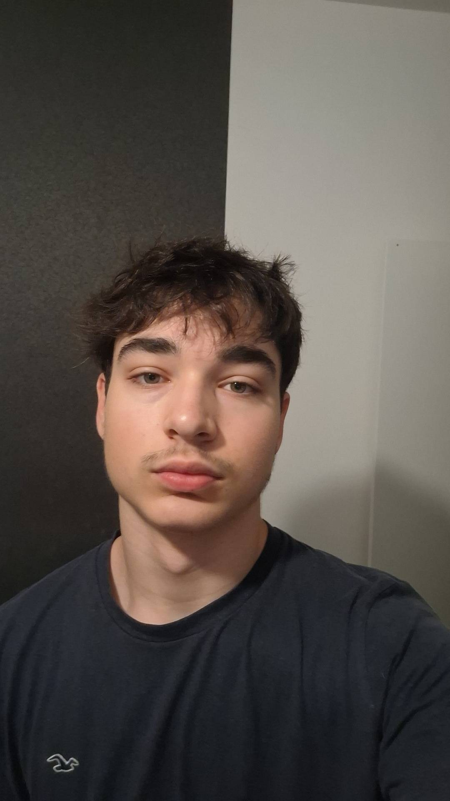

Hallo, ik ben Tobias Verhoogen

Wie ben ik?
Ik ben Tobias Verhoogen en ik studeer aan Thomas More. Op deze website kom je meer te weten over mij, wat ik doe en wat ik leuk vind.
Waar ben ik goed in?
Ik ben goed in gamen. Ik kan snel reageren, goed samenwerken in een team en ik blijf rustig als het spannend wordt.
Waar ben ik minder goed in?
Soms ben ik wat te lang aan het gamen en vergeet ik de tijd. Daar werk ik aan.